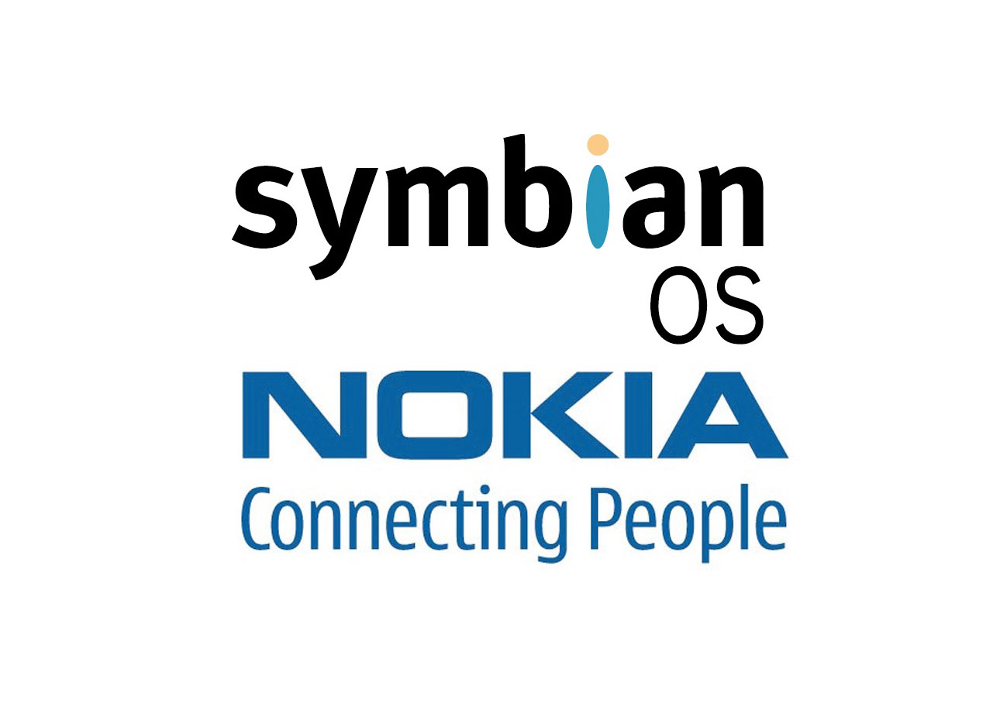

<div class="flex-container">
    
</div>
<h3>24 июня 2008 года компании Nokia, Sony Ericsson, Motorola и NTT DOCOMO официально заявили об объединении Symbian OS, S60, UIQ и MOAP(S) с целью создания единой открытой мобильной платформы. </h3>
